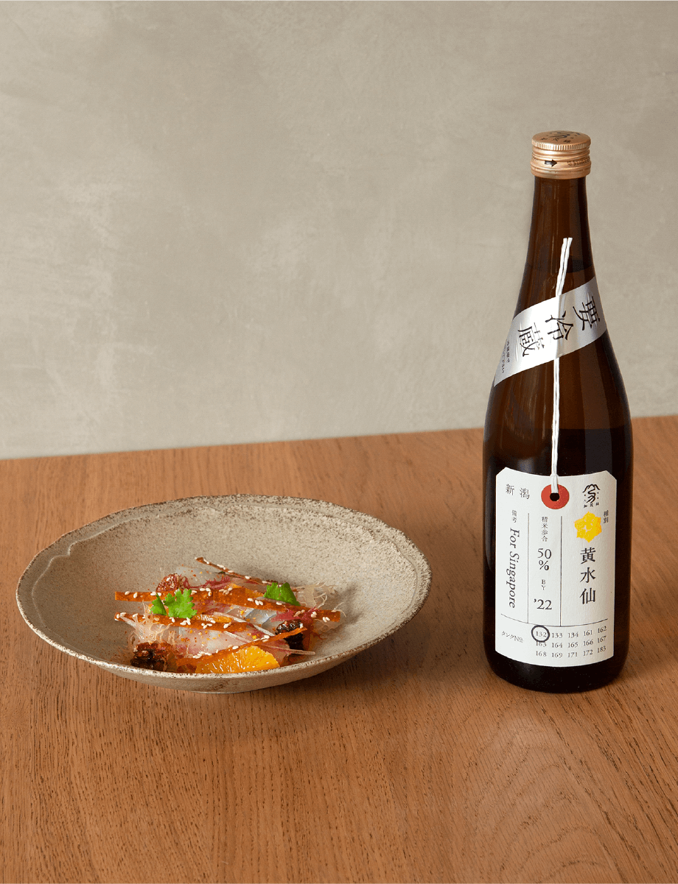
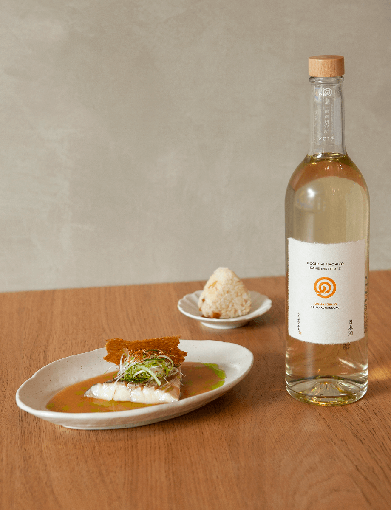
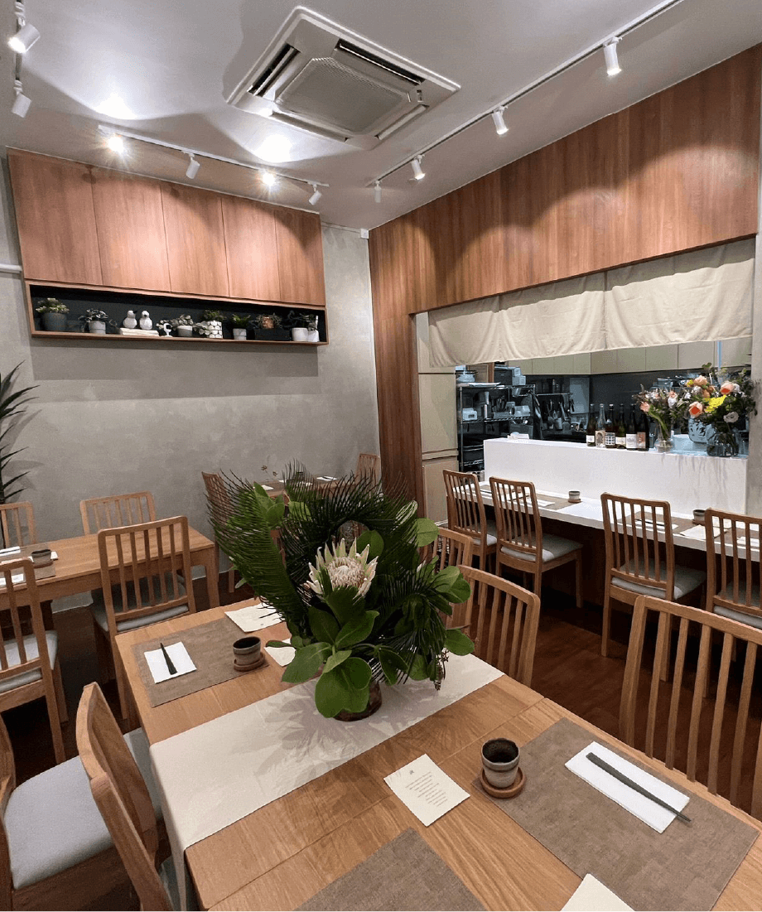

Pairing 1

Pairing 2

SINGAPOREAN
Foliage
11 Kee Seng Street, #01-03, Singapore 089218
Tel: 8785 7884
www.foliage.sgFoliage is an intimate 14-seater restaurant run by a husband and wife team, serving modern Singaporean-Asian cuisine. The name “Foliage” refers to the way leaves are connected to a branch and this notion is reflected in the dishes created. Just as leaves to a branch come in many shapes and shades, the diverse flavours from Singapore’s multi-ethnic culture is the root and inspiration at Foliage.
Head Chef Dillon Ng
Dillon Ng is the chef and owner of Foliage; his latest culinary adventure following Allium, Gastrosmiths and The Humble Loaf. With a passion for local cuisine, seasonal produce and travelling, his cooking is self-taught and always evolving.